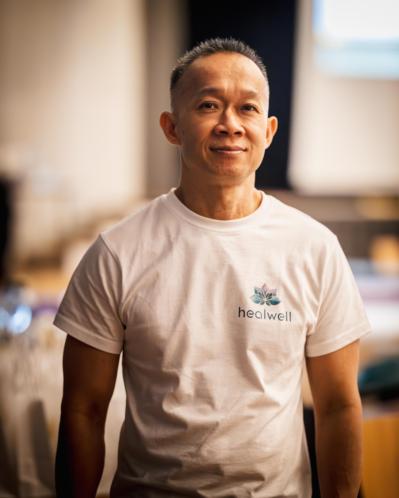
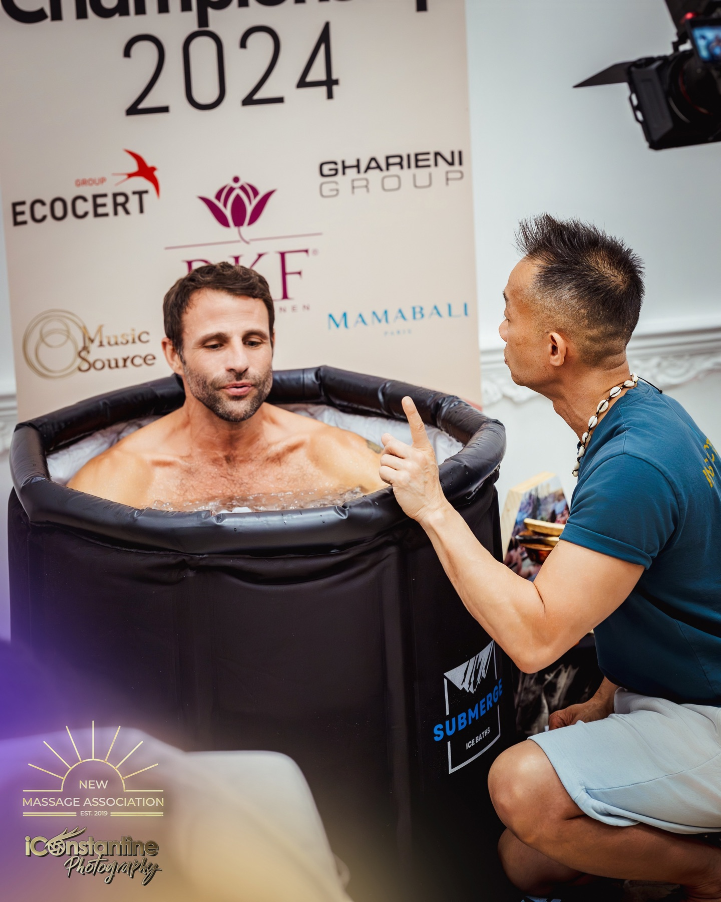

Born in Vietnam. Raised in Australia. Practising in Zurich. A life of learning, service and hands-on craft.

“
I practice letting go.
Matthew Hua
The person behind the practice
A life across borders. A practice without a script.
From Vietnam to Australia and then Zurich, Matthew's story moves through community health, hands-on craft, teaching and international competition.
01 / Between shores
A wider way of seeing.
Matthew left Vietnam by boat with his family and arrived in Australia as a child. In Sydney, meditation entered his life during his teenage years. Community health work and studies in Social Science and International Studies at the University of Technology Sydney followed.
02 / The language of touch
Learning, through the hands.
His massage learning began in Sydney in 1997 and continued in Guangzhou and Zurich. Classical, Chinese, Balinese, Thai, Shiatsu and sports influences became part of a dynamic personal style. Healwell gave that practice a home in Zurich.

03 / Beyond the familiar
The teacher keeps practising.
An Advanced Wim Hof Method Instructor and Oxygen Advantage Breathwork Instructor, Matthew continues to explore the practices he teaches. His experiences include a winter hike with Wim Hof, workshop assistance in Sweden and a barefoot Zurich marathon.
04 / Passing it on
From the table to the international floor.
Competition brought Swiss freestyle gold, Eastern Freestyle gold in Germany and European gold in Asian Inspired / Nuad Thai in Rome. By 2026, his international work included the European Feedback Jury near Paris and a judging appointment in Tokyo.
A practice, taking shape.
Massage learning begins in Sydney.
Healwell is established in Zurich; its public brand story begins in 2018.
EMR registration for five recognised methods.
Wim Hof Method instructor certification.
Swiss freestyle gold; gold and silver at the Universal Massage Championship in Germany.
European category gold in Rome; involvement in Zurich's VAULT studio.
International judging, feedback and practitioner mentoring.
EMR · 2021
A craft with a foundation.
His EMR-recognised methods are Therapeutic Massage, Classical Massage, Foot Reflexology, Manual Lymphatic Drainage and Autogenic Training. Continued learning and international exchange sit alongside that foundation.
Matthew Hua & Tony Robbins
Influence, and encounter.
Tony Robbins has influenced Matthew's interest in personal development for more than 35 years. Their meeting belongs to a continuing exploration of attention, personal responsibility and how we meet experience.
Rooted in Zurich. Open to the world.
Alongside Healwell, Matthew's work connects with VAULT in Zurich. Teaching, collaborative practice and international exchanges continue to bring new perspectives back to the studio.